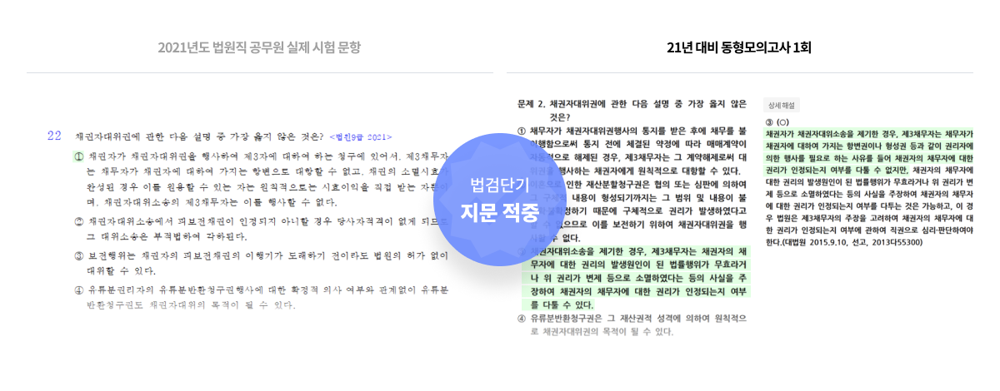

약 2개월이 남은 지금,
매일이 시험날인 것처럼 실전 훈련!
시험 직전 최종 마무리
6순환 대개강!
전 범위 실전 모의고사
강의력은 이미 증명되었습니다!
법원, 검찰직 합격생 2명 중 1명*을 만든 법검단기
* 20년 법원직 시험일 이전, 최종합격생 214명 중 108명, 검찰직 시험일 이전, 필기합격생 225명 중 149명유무료 수강 이력이 있는 회원 기준 총 439명 중 252명으로 59% 차지(중복포함)
22년 합격이 얼마 안 남은 지금,
고민하지 말고 전범위 모의고사를 수강하세요!
모의고사 참여하고 나의 위치를 확인할 타이밍입니다.시험이 코앞으로 다가온 지금!
전범위 모의고사를 왜 수강해야 할까요?
-
진도별 모의고사와 동형모의고사는 어렵습니다. 실전보다 훨씬 어렵게느껴질 수도 있습니다. 그래서 좋습니다. 저는 이번 형법시험이 어렵다 어렵다 했지만, 시험장에서는 전혀 그런 느낌을 받지 못했고, 형법 15분(실제로는 15분 안걸렸을 것 같습니다.) 형소법 10분만에 다 풀었습니다. 그건 진도별 모의고사와 실전동형 모의고사를 풀면서 어려운 문제들에 충분히 단련됐기 때문이라고 생각합니다. 커리큘럼을 진행할 때에는 좀 과한 것 같고, 고통스럽고 자괴감이 많이 들겠지만 묵묵하게 따라가시면 분명 좋은 결과가 있으실 겁니다. 제가 이번시험에서 시간관리에 성공할 수 있었는 데에 가장 큰 도움이 된 커리큘럼이라고 생각합니다.
-
진도별 모의고사 시즌에는 커리큘럼에 맞춰 모의고사를 풀고 틀린 지문위주로 꼼꼼히 분석하였습니다. 점수가 좋지 않아서 좌절하고 불안한 적도 굉장히 많았지만, 교수님께서 모르거나 틀린 지문을 완벽하게 분석하여 내 것으로 만드는 것이 중요하다고 하셔서 지문 하나하나 꼼꼼하게 분석했던 것 같습니다.
약 시험 한 달 전에는 시간을 재고 실제 시험과 동일하게 전 범위 모의고사를 풀었습니다. 각 과목마다 시간을 배분하여 문제를 풀었고 시험을 치고 나서는 바로 과목별 피드백을 했습니다. 그리고, 틀린 문항에는 형광펜 표시를 하여 여러 번 반복하였습니다. -
저는 기본 – 심화 – 기출 – 진도별 모의고사 – 최종 모의고사 – 최신판례 순으로 풀커리를 탔습니다. 올인원 강의를 듣고 바로 기출로 넘어가서 강의를 들으며 복습했습니다. 그 이후 모르는 부분은 이제 필기노트로 넘어가 개념을 다시 잡고 공부를 했습니다. 그리고 시험 2달전부터 모의고사를 혼자서 풀고 복습하면서 감각을 익혔습니다. 모든 과목에 있어서 제가 가장 중요하다고 생각하는 것은 기출과 모의고사입니다. 기출 및 모의고사를 반복 또 반복하시면 됩니다. 모두 파이팅입니다!
-
기출문제를 풀 때에 주의할 점은 매번 풀던 지문이기 때문에 자신이 익숙한 정답을 찍게 됩니다. 그것을 자신이 알고 있다고 착각하게 되기도 합니다. 그 지문을 찍었을 때 왜 찍었는지 명확히 설명할 수 있어야 확실히 아는 것입니다. 물론 답이 아닌 지문들도 마찬가지입니다. 저는 자신이 헷갈리는 유사판례나 주의해야할 판례들, 매번 틀리는 문제를 그 법 과목 책 맨 앞에 붙여두고, 포스트 잇으로 표시한 중요한 사례 문제를 시험 치기 직전에 읽었습니다.
시험은 실수를 하지않는 것이 제일 중요하다고 생각합니다. 실수를 줄이는 법을 기출과 모의고사를 풀면서 꼭 연습하세요! 실제로 합격자들 중에 법검단기 수강생이 정말 많습니다. -
저는 과목당 이론-기출은 똑 같은 선생님 강의만 수강했는데 모의고사는 최대한 다양한 강사의 것을 많이 풀어보는 것이 좋다고 생각해서 한 과목당 10회 정도 구성되는 모의고사 책을 5권 넘게 샀던 것 같아요. 다만 모의고사는 풀고 회독하는 것이 아니라 기출과는 다른 방식의 새로운 문제가 나올 수 있다는 것에 나 스스로 긴장하기 위해서, 또 의외로 이 부분에 대해 잘 몰랐구나를 깨닫기 위해서 반드시 필요한 과정이라고 생각해서 20문제를 푼다고 했을 때 틀리거나 신선했던 부분을 이론 강의서에 옮겨놨고 다 푼 다음에 그 모의고사 문제집을 다시 보지는 않았어요. (예를 들어 문동균 선생님 필기노트에 전한길 선생님 모의고사 문제를 포스트잇으로 옮겨놨어요.) 전 범위의 모의고사는 내가 어딜 모르는지 잘 알 수 있어요.
높은 적중률을 보여주는 법검단기 모의고사로
6월 25일 법원직 시험을 미리 경험해보세요!
- 
실전을 위한 가장 완벽한 연습은
오직 법검단기에서만 가능합니다.
법검단기 모의고사 응시시스템은
어떻게 다른가요?

법원, 검찰직 합격생 2명 중 1명*을 만든 법검단기
이미 증명된 강의력을 믿고 따라오세요.
*20년 법원직 시험일 이전, 최종합격생 214명 중 108명, 검찰직 시험일 이전, 필기합격생 225명 중 149명유무료 수강 이력이 있는 회원 기준 총 439명 중 252명으로 59% 차지(중복포함)
법검단기의 목표는 100% 전원 합격입니다.
여러분의 합격까지 법검단기가 함께 하겠습니다.
법검단기 평생 0원 프리패스
지금이 최대 혜택 받고 신청할 유일한 기회!
#합격까지 무제한 #합격하면 환급